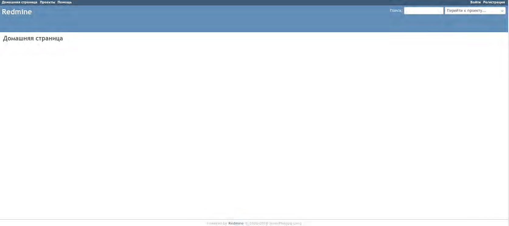
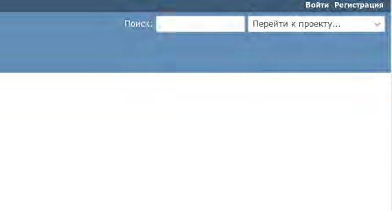
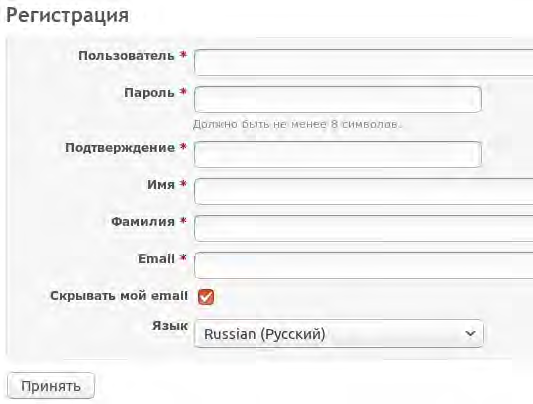
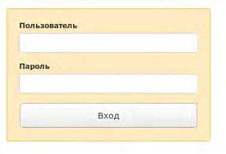
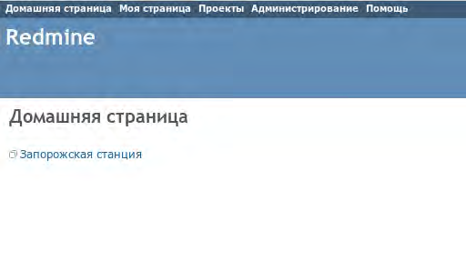
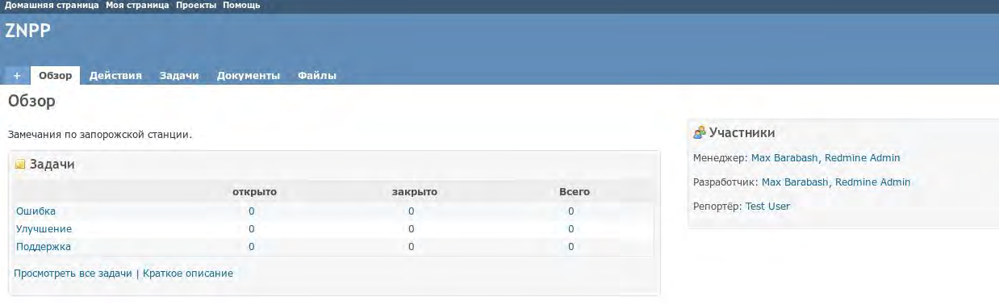
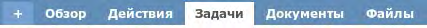
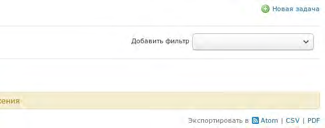
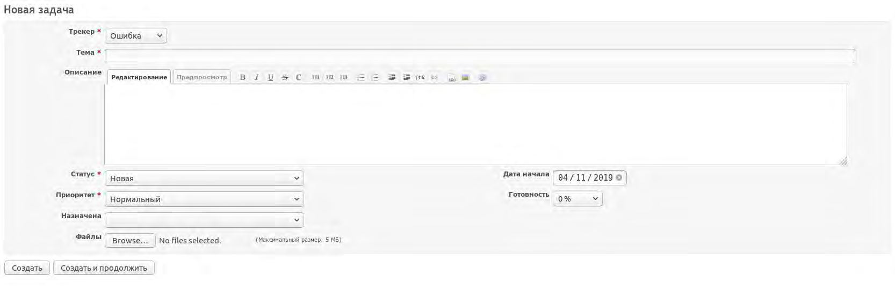
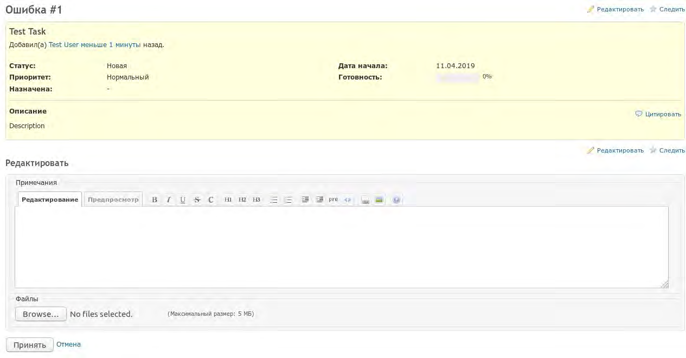

Приложение К
Процедура использования специального ПО «Redmine»
- Шаг 1 Для перехода на «Домашнюю страницу» ПО «Redmine» (Bug Tracker) необходимо перейти по адресу: redmine.dc.cns.atom

Рисунок К.1 – Домашняя страница Redmine
- Шаг 2 В правом верхнем углу находятся кнопки для входа и регистрации:

Рисунок К.2 – Кнопки «Вход» и «Регестрация»
- Шаг 3 Для регистрации нового пользователя необходимо нажать на кнопку «Регистрация» и заполнить форму:

Рисунок К.3 – Форма регистрации пользователя
- Шаг 4 Далее необходимо авторизоваться в системе, нажав на кнопку «Вход» на домашней странице и введя имя пользователя и пароль, указанные при регистрации:

Рисунок К.4 – Окно авторизации пользователя
После авторизации, будет отображена домашняя страница:

Рисунок К.5 – Окно авторизации пользователя
- Шаг 5 Для того, чтобы добавить замечание, сначала необходимо выбрать проект. Для этого можно кликнуть по ссылке на домашней странице, или же выбрать в левом верхнем углу пункт «Проекты», а затем выбрать необходимый проект из списка.
После чего будет открыто окно проекта:

Рисунок К.6 – Окно проекта
- Шаг 6 Для того, чтобы добавить замечание (задачу), необходимо нажать на плюс слева от меню проекта:

Рисунок К.7 – Меню проекта
- Шаг 7 Далее в выпадающем меню выбрать пункт «Новая задача». Или же перейти в меню «Задачи», в котором отображается список всех задач проекта, и нажать на кнопку «Новая задача» в правом верхнем углу:

Рисунок К.8 – Кнопка «Новая задача»
- Шаг 8 Далее отобразиться форма создания задачи:

Рисунок К.9 – Форма создания задачи
Таблица К.1 – Поля формы создания задачи
| 1 |
Трекер |
Задается тип задачи (Ошибка, Улучшение, Поддержка |
| 2 |
Тема |
Название или краткое описание |
| 3 |
Статус |
Во время создании задачи ей присваивается статус «Новая», в ходе работ статут может изменится |
| 5 |
Приоритет |
Приоритет задачи |
| 6 |
Назначена |
Кому эта задача назначена на выполнение (это поле можно оставлять пустым) |
| 7 |
Файлы |
Загрузка файлов, если это необходимо |
| 8 |
Дата начала |
Дата начала работы над задачей, по умолчанию устанавливается дата создания задачи |
| 9 |
Готовность задачи |
При создании устанавливается значение 0 %, значение готовности изменяется по мере выполнения задачи |
- Шаг 9 Далее после добавления задачи, существует возможность добавлять примечания, для этого необходимо нажать на кнопку «Редактировать» в правом верхнем углу:

Рисунок К.10 – Редактирование задачи